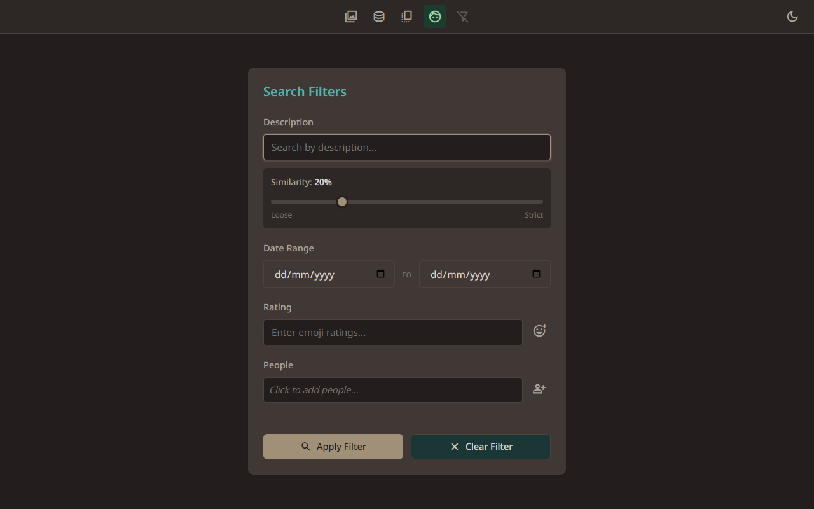
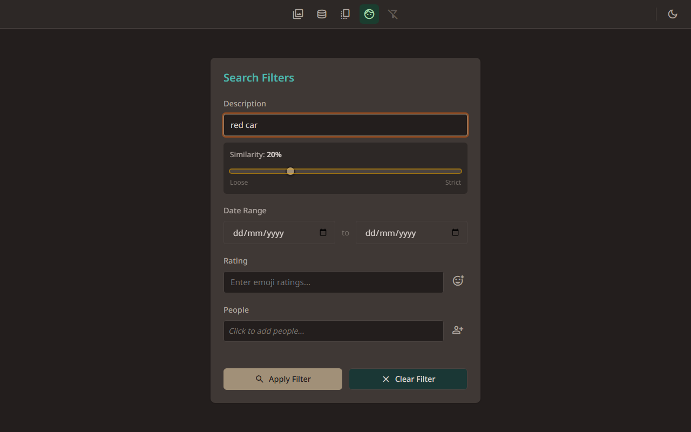
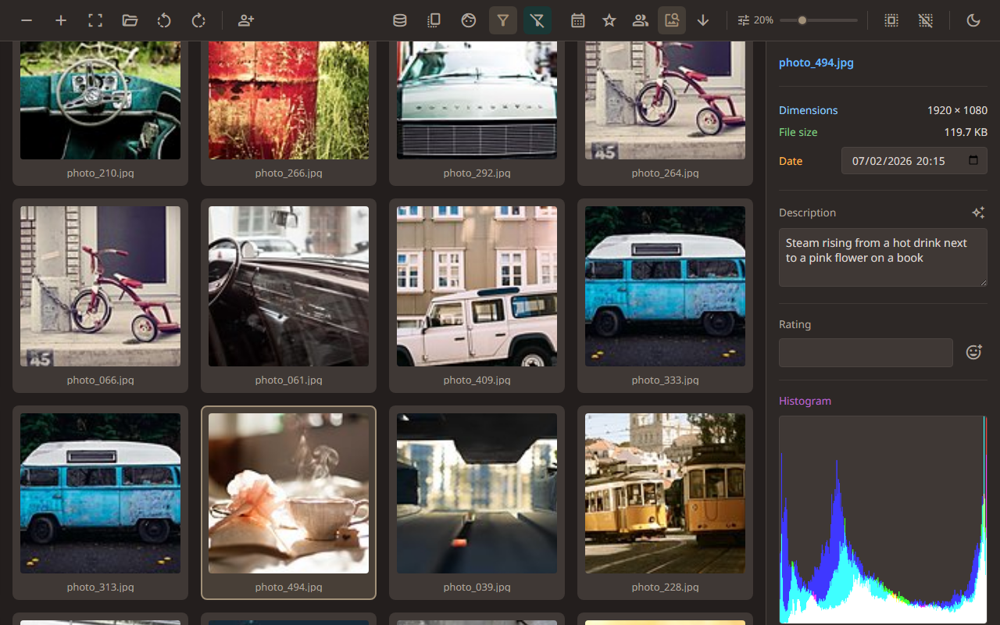
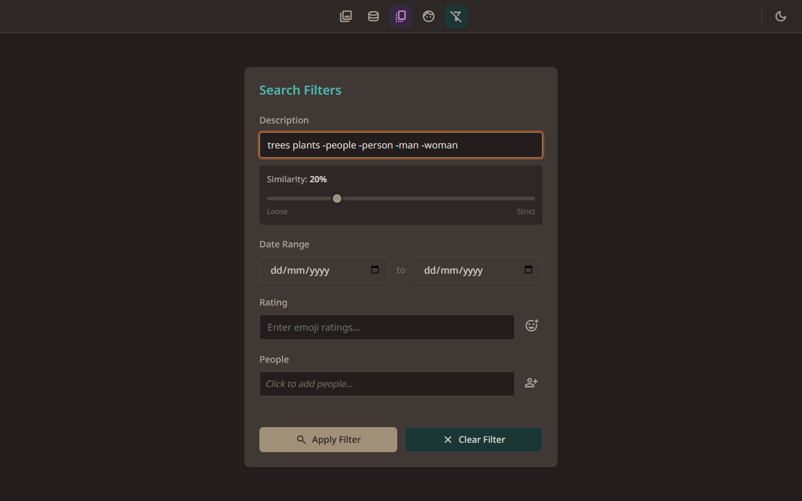
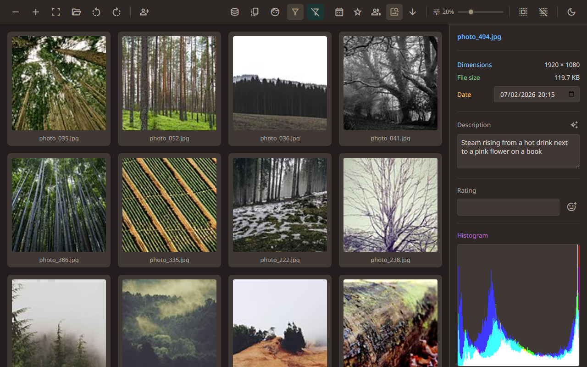
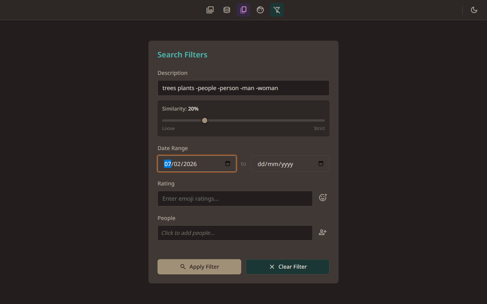
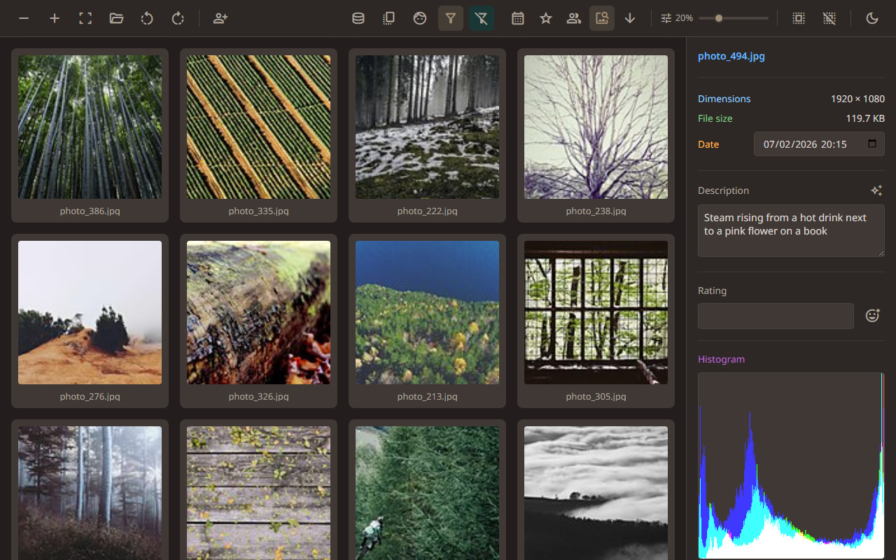
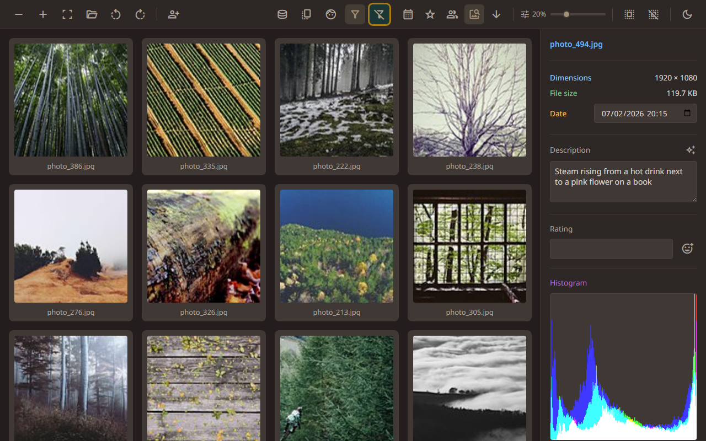

Search — Finding specific photos
← Back to contents
3.1. Opening Search

Click Search in the toolbar to build a filter for your photos.
3.2. Searching by description

Type what you’re looking for. This is a smart search — it understands meaning, not just keywords. The similarity slider controls how strict the matching is: slide right for results that closely match your query, or left for looser matches.
3.3. Search results in the Gallery

The Gallery now shows photos in order of how strongly they match your search. The toolbar shows that a filter is active.
3.4. Using negative terms

Put a minus sign before a word to exclude it. Here we’re looking for trees and plants, without people.
3.5. Negative term results

The Gallery now shows nature photos with people excluded. Negative terms are a powerful way to narrow down your search.
3.6. Date range filter

Narrow your results to a date range. Leave either date blank for an open-ended range.
3.7. Applying combined filters

Filters stack up — here we have a description search and a date range working together. Click Apply to see only the photos that match everything.
3.8. Clearing the filter

Click Clear to remove all filters and see your full library again.